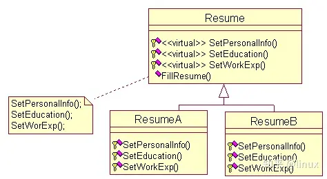

# 六大原则
# 总原则 —— 开闭原则（Open Closed Principle）
在程序需要进行拓展的时候，不能去修改原有的代码，而是要扩展原有代码，实现一个热插拔的效果。所以一句话概括就是：为了使程序的扩展性好，易于维护和升级。想要达到这样的效果，我们需要使用接口和抽象类等。
# 1、单一职责原则（Single Responsibility Principle）
一个类应该只有一个发生变化的原因。不要存在多于一个导致类变更的原因，也就是说每个类应该实现单一的职责，否则就应该把类拆分。
# 2、里氏替换原则（Liskov Substitution Principle）
所有引用基类的地方必须能透明地使用其子类的对象。
任何基类可以出现的地方，子类一定可以出现。里氏替换原则是继承复用的基石，只有当衍生类可以替换基类，软件单位的功能不受到影响时，基类才能真正被复用，而衍生类也能够在基类的基础上增加新的行为。
里氏代换原则是对 “开 - 闭” 原则的补充。实现 “开闭” 原则的关键步骤就是抽象化。而基类与子类的继承关系就是抽象化的具体实现，所以里氏替换原则是对实现抽象化的具体步骤的规范。里氏替换原则中，子类对父类的方法尽量不要重写和重载。因为父类代表了定义好的结构，通过这个规范的接口与外界交互，子类不应该随便破坏它。
# 3、依赖倒置原则（Dependence Inversion Principle）
1、上层模块不应该依赖底层模块，它们都应该依赖于抽象。
2、抽象不应该依赖于细节，细节应该依赖于抽象。
面向接口编程，依赖于抽象而不依赖于具体。写代码时用到具体类时，不与具体类交互，而与具体类的上层接口交互。
# 4、接口隔离原则（Interface Segregation Principle）
1、客户端不应该依赖它不需要的接口。
2、类间的依赖关系应该建立在最小的接口上。
每个接口中不存在子类用不到却必须实现的方法，如果不然，就要将接口拆分。使用多个隔离的接口，比使用单个接口（多个接口方法集合到一个的接口）要好。
# 5、迪米特法则（最少知道原则）(Law of Demeter)
一个类对自己依赖的类知道的越少越好。无论被依赖的类多么复杂，都应该将逻辑封装在方法的内部，通过 public 方法提供给外部。这样当被依赖的类变化时，才能最小的影响该类。
最少知道原则的另一个表达方式是：只与直接的朋友通信。类之间只要有耦合关系，就叫朋友关系。耦合分为依赖、关联、聚合、组合等。我们称出现为成员变量、方法参数、方法返回值中的类为直接朋友。局部变量、临时变量则不是直接的朋友。我们要求陌生的类不要作为局部变量出现在类中。
# 6、合成复用原则（Composite Reuse Principle）
尽量使用对象组合 / 聚合，而不是继承关系达到软件复用的目的。
合成或聚合可以将已有对象纳入到新对象中，使之成为新对象的一部分，因此新对象可以调用已有对象的功能。
# 创建型模式
# 工厂方法
工厂方法模式，是指定义一个用于创建对象的接口，让子类决定实例化哪一个类。使一个类的实例化延迟到其子类。
class SingleCore | |
{ | |
public: | |
virtual void Show() = 0; | |
}; | |
// 单核 A | |
class SingleCoreA: public SingleCore | |
{ | |
public: | |
void Show() { cout<<"SingleCore A"<<endl; } | |
}; | |
// 单核 B | |
class SingleCoreB: public SingleCore | |
{ | |
public: | |
void Show() { cout<<"SingleCore B"<<endl; } | |
}; | |
class Factory | |
{ | |
public: | |
virtual SingleCore* CreateSingleCore() = 0; | |
}; | |
// 生产 A 核的工厂 | |
class FactoryA: public Factory | |
{ | |
public: | |
SingleCoreA* CreateSingleCore() { return new SingleCoreA; } | |
}; | |
// 生产 B 核的工厂 | |
class FactoryB: public Factory | |
{ | |
public: | |
SingleCoreB* CreateSingleCore() { return new SingleCoreB; } | |
}; |
# 抽象工厂
抽象工厂模式为提供一个创建一系列相关或相互依赖对象的接口，而无需指定它们具体的类。
// 单核 | |
class SingleCore | |
{ | |
public: | |
virtual void Show() = 0; | |
}; | |
class SingleCoreA: public SingleCore | |
{ | |
public: | |
void Show() { cout<<"Single Core A"<<endl; } | |
}; | |
class SingleCoreB :public SingleCore | |
{ | |
public: | |
void Show() { cout<<"Single Core B"<<endl; } | |
}; | |
// 多核 | |
class MultiCore | |
{ | |
public: | |
virtual void Show() = 0; | |
}; | |
class MultiCoreA : public MultiCore | |
{ | |
public: | |
void Show() { cout<<"Multi Core A"<<endl; } | |
}; | |
class MultiCoreB : public MultiCore | |
{ | |
public: | |
void Show() { cout<<"Multi Core B"<<endl; } | |
}; | |
// 工厂 | |
class CoreFactory | |
{ | |
public: | |
virtual SingleCore* CreateSingleCore() = 0; | |
virtual MultiCore* CreateMultiCore() = 0; | |
}; | |
// 工厂 A，专门用来生产 A 型号的处理器 | |
class FactoryA :public CoreFactory | |
{ | |
public: | |
SingleCore* CreateSingleCore() { return new SingleCoreA(); } | |
MultiCore* CreateMultiCore() { return new MultiCoreA(); } | |
}; | |
// 工厂 B，专门用来生产 B 型号的处理器 | |
class FactoryB : public CoreFactory | |
{ | |
public: | |
SingleCore* CreateSingleCore() { return new SingleCoreB(); } | |
MultiCore* CreateMultiCore() { return new MultiCoreB(); } | |
}; |
# 建造者
建造者是一种创建型设计模式，使你能够分步骤创建复杂对象。该模式允许你使用相同的创建代码生成不同类型和形式的对象。
class Builder | |
{ | |
public: | |
virtual void BuildHead() {} | |
virtual void BuildBody() {} | |
virtual void BuildLeftArm(){} | |
virtual void BuildRightArm() {} | |
virtual void BuildLeftLeg() {} | |
virtual void BuildRightLeg() {} | |
}; | |
// 构造瘦人 | |
class ThinBuilder : public Builder | |
{ | |
public: | |
void BuildHead() { cout<<"build thin body"<<endl; } | |
void BuildBody() { cout<<"build thin head"<<endl; } | |
void BuildLeftArm() { cout<<"build thin leftarm"<<endl; } | |
void BuildRightArm() { cout<<"build thin rightarm"<<endl; } | |
void BuildLeftLeg() { cout<<"build thin leftleg"<<endl; } | |
void BuildRightLeg() { cout<<"build thin rightleg"<<endl; } | |
}; | |
// 构造胖人 | |
class FatBuilder : public Builder | |
{ | |
public: | |
void BuildHead() { cout<<"build fat body"<<endl; } | |
void BuildBody() { cout<<"build fat head"<<endl; } | |
void BuildLeftArm() { cout<<"build fat leftarm"<<endl; } | |
void BuildRightArm() { cout<<"build fat rightarm"<<endl; } | |
void BuildLeftLeg() { cout<<"build fat leftleg"<<endl; } | |
void BuildRightLeg() { cout<<"build fat rightleg"<<endl; } | |
}; | |
// 构造的指挥官 | |
class Director | |
{ | |
private: | |
Builder *m_pBuilder; | |
public: | |
Director(Builder *builder) { m_pBuilder = builder; } | |
void Create(){ | |
m_pBuilder->BuildHead(); | |
m_pBuilder->BuildBody(); | |
m_pBuilder->BuildLeftArm(); | |
m_pBuilder->BuildRightArm(); | |
m_pBuilder->BuildLeftLeg(); | |
m_pBuilder->BuildRightLeg(); | |
} | |
}; | |
// 客户 | |
int main() | |
{ | |
FatBuilder thin; | |
Director director(&thin); | |
director.Create(); | |
return 0; | |
} |
# 原型
用原型实例指定创建对象的种类，并且通过拷贝这些原型创建新的对象。
// 父类 | |
class Resume | |
{ | |
protected: | |
char *name; | |
public: | |
Resume() {} | |
virtual ~Resume() {} | |
virtual Resume* Clone() { return NULL; } | |
virtual void Set(char *n) {} | |
virtual void Show() {} | |
}; | |
class ResumeA : public Resume | |
{ | |
public: | |
ResumeA(const char *str); // 构造函数 | |
ResumeA(const ResumeA &r); // 拷贝构造函数 | |
~ResumeA(); // 析构函数 | |
ResumeA* Clone(); // 克隆，关键所在 | |
void Show(); // 显示内容 | |
}; | |
ResumeA::ResumeA(const char *str) | |
{ | |
if(str == NULL) { | |
name = new char[1]; | |
name[0] = '\0'; | |
} | |
else { | |
name = new char[strlen(str)+1]; | |
strcpy(name, str); | |
} | |
} | |
ResumeA::~ResumeA() { delete [] name;} | |
ResumeA::ResumeA(const ResumeA &r) { | |
name = new char[strlen(r.name)+1]; | |
strcpy(name, r.name); | |
} | |
ResumeA* ResumeA::Clone() { | |
return new ResumeA(*this); | |
} | |
void ResumeA::Show() { | |
cout<<"ResumeA name : "<<name<<endl; | |
} | |
//ResumeB 和 ResumeA 类似 | |
// 客户 | |
int main() | |
{ | |
Resume *r1 = new ResumeA("A"); | |
Resume *r2 = new ResumeB("B"); | |
Resume *r3 = r1->Clone(); | |
Resume *r4 = r2->Clone(); | |
r1->Show(); r2->Show(); | |
// 删除 r1,r2 | |
delete r1; delete r2; | |
r1 = r2 = NULL; | |
// 深拷贝所以对 r3,r4 无影响 | |
r3->Show(); r4->Show(); | |
delete r3; delete r4; | |
r3 = r4 = NULL; | |
} |
# 单例
单例是一种创建型设计模式，让你能够保证一个类只有一个实例，并提供一个访问该实例的全局节点。
<img src="aec7623b038bb26dc13f1cc0a7e6b90a.png" alt="1691050997088.png" style="zoom:50%;" />
//Singleton.h | |
class Singleton | |
{ | |
public: | |
static Singleton* GetInstance(); | |
private: | |
Singleton() {} | |
static Singleton *singleton; | |
}; | |
//Singleton.cpp | |
Singleton* Singleton::singleton = NULL; | |
Singleton* Singleton::GetInstance() | |
{ | |
if(singleton == NULL) | |
singleton = new Singleton(); | |
return singleton; | |
} |
//Singleton 存在子类 | |
//Singleton.h | |
#pragma once | |
#include <iostream> | |
using namespace std; | |
class Singleton | |
{ | |
public: | |
static Singleton* GetInstance(const char* name); | |
virtual void Show() {} | |
protected: // 必须为保护，如果是私有属性，子类无法访问父类的构造函数 | |
Singleton() {} | |
private: | |
static Singleton *singleton; // 唯一实例的指针 | |
}; | |
//Singleton.cpp | |
#include "Singleton.h" | |
#include "SingletonA.h" | |
#include "SingletonB.h" | |
Singleton* Singleton::singleton = NULL; | |
Singleton* Singleton::GetInstance(const char* name) | |
{ | |
if(singleton == NULL) | |
{ | |
if(strcmp(name, "SingletonA") == 0) | |
singleton = new SingletonA(); | |
else if(strcmp(name,"SingletonB") == 0) | |
singleton = new SingletonB(); | |
else | |
singleton = new Singleton(); | |
} | |
return singleton; | |
} | |
//SingletonA.h | |
#pragma once | |
#include "Singleton.h" | |
class SingletonA: public Singleton | |
{ | |
friend class Singleton; // 必须为友元类，否则父类无法访问子类的构造函数 | |
public: | |
void Show() { cout<<"SingletonA"<<endl; } | |
private: // 为保护属性，这样外界无法通过构造函数进行实例化 | |
SingletonA() {} | |
}; | |
//SingletonB.h | |
#pragma once | |
#include "Singleton.h" | |
class SingletonB: public Singleton | |
{ | |
friend class Singleton; // 必须为友元类，否则父类无法访问子类的构造函数 | |
public: | |
void Show(){ cout<<"SingletonB"<<endl; } | |
private: // 为保护属性，这样外界无法通过构造函数进行实例化 | |
SingletonB() {} | |
}; |
# 结构型模式
# 适配器
适配器模式将一个类的接口转换成客户希望的另外一个接口，使得原本由于接口不兼容而不能一起工作的那些类可以一起工作。
举个例子，在 STL 中就用到了适配器模式。STL 实现了一种数据结构，称为双端队列，支持前后两段的插入与删除。STL 实现栈和队列时，没有从头开始定义它们，而是直接使用双端队列实现的。这里双端队列就扮演了适配器的角色。队列用到了它的后端插入，前端删除。而栈用到了它的后端插入，后端删除。
// 双端队列 | |
class Deque | |
{ | |
public: | |
void push_back(int x) { cout<<"Deque push_back"<<endl; } | |
void push_front(int x) { cout<<"Deque push_front"<<endl; } | |
void pop_back() { cout<<"Deque pop_back"<<endl; } | |
void pop_front() { cout<<"Deque pop_front"<<endl; } | |
}; | |
// 顺序容器 | |
class Sequence | |
{ | |
public: | |
virtual void push(int x) = 0; | |
virtual void pop() = 0; | |
}; | |
// 栈 | |
class Stack: public Sequence | |
{ | |
public: | |
void push(int x) { deque.push_back(x); } | |
void pop() { deque.pop_back(); } | |
private: | |
Deque deque; // 双端队列 | |
}; | |
// 队列 | |
class Queue: public Sequence | |
{ | |
public: | |
void push(int x) { deque.push_back(x); } | |
void pop() { deque.pop_front(); } | |
private: | |
Deque deque; // 双端队列 | |
}; | |
// 客户 | |
int main() | |
{ | |
Sequence *s1 = new Stack(); | |
Sequence *s2 = new Queue(); | |
s1->push(1); s1->pop(); | |
s2->push(1); s2->pop(); | |
delete s1; delete s2; | |
return 0; | |
} |
# 桥接
桥接是一种结构型设计模式，可将一个大类或一系列紧密相关的类拆分为抽象和实现两个独立的层次结构，从而能在开发时分别使用

// 操作系统 | |
class OS | |
{ | |
public: | |
virtual void InstallOS_Imp() {} | |
}; | |
class WindowOS: public OS | |
{ | |
public: | |
void InstallOS_Imp() { cout<<"安装Window操作系统"<<endl; } | |
}; | |
class LinuxOS: public OS | |
{ | |
public: | |
void InstallOS_Imp() { cout<<"安装Linux操作系统"<<endl; } | |
}; | |
class UnixOS: public OS | |
{ | |
public: | |
void InstallOS_Imp() { cout<<"安装Unix操作系统"<<endl; } | |
}; | |
// 计算机 | |
class Computer | |
{ | |
public: | |
virtual void InstallOS(OS *os) {} | |
}; | |
class DellComputer: public Computer | |
{ | |
public: | |
void InstallOS(OS *os) { os->InstallOS_Imp(); } | |
}; | |
class AppleComputer: public Computer | |
{ | |
public: | |
void InstallOS(OS *os) { os->InstallOS_Imp(); } | |
}; | |
class HPComputer: public Computer | |
{ | |
public: | |
void InstallOS(OS *os) { os->InstallOS_Imp(); } | |
}; | |
// 客户 | |
int main() | |
{ | |
OS *os1 = new WindowOS(); | |
OS *os2 = new LinuxOS(); | |
Computer *computer1 = new AppleComputer(); | |
computer1->InstallOS(os1); | |
computer1->InstallOS(os2); | |
} |
# 组合
组合是一种结构型设计模式，你可以使用它将对象组合成树状结构，并且能像使用独立对象一样使用它们。
比如一个集团公司，它有一个母公司，下设很多家子公司。不管是母公司还是子公司，都有各自直属的财务部、人力资源部、销售部等。对于母公司来说，不论是子公司，还是直属的财务部、人力资源部，都是它的部门。整个公司的部门拓扑图就是一个树形结构。
class Company | |
{ | |
public: | |
Company(string name) { m_name = name; } | |
virtual ~Company(){} | |
virtual void Add(Company *pCom){} | |
virtual void Show(int depth) {} | |
protected: | |
string m_name; | |
}; | |
// 具体公司 | |
class ConcreteCompany : public Company | |
{ | |
public: | |
ConcreteCompany(string name): Company(name) {} | |
virtual ~ConcreteCompany() {} | |
void Add(Company *pCom) { m_listCompany.push_back(pCom); } // 位于树的中间，可以增加子树 | |
void Show(int depth) | |
{ | |
for(int i = 0;i < depth; i++) | |
cout<<"-"; | |
cout<<m_name<<endl; | |
list<Company *>::iterator iter=m_listCompany.begin(); | |
for(; iter != m_listCompany.end(); iter++) // 显示下层结点 | |
(*iter)->Show(depth + 2); | |
} | |
private: | |
list<Company *> m_listCompany; | |
}; | |
// 具体的部门，财务部 | |
class FinanceDepartment : public Company | |
{ | |
public: | |
FinanceDepartment(string name):Company(name){} | |
virtual ~FinanceDepartment() {} | |
virtual void Show(int depth) // 只需显示，无限添加函数，因为已是叶结点 | |
{ | |
for(int i = 0; i < depth; i++) | |
cout<<"-"; | |
cout<<m_name<<endl; | |
} | |
}; | |
// 具体的部门，人力资源部 | |
class HRDepartment :public Company | |
{ | |
public: | |
HRDepartment(string name):Company(name){} | |
virtual ~HRDepartment() {} | |
virtual void Show(int depth) // 只需显示，无限添加函数，因为已是叶结点 | |
{ | |
for(int i = 0; i < depth; i++) | |
cout<<"-"; | |
cout<<m_name<<endl; | |
} | |
}; | |
// 客户 | |
int main() | |
{ | |
Company *root = new ConcreteCompany("总公司"); | |
Company *leaf1=new FinanceDepartment("财务部"); | |
Company *leaf2=new HRDepartment("人力资源部"); | |
root->Add(leaf1); | |
root->Add(leaf2); | |
// 分公司 A | |
Company *mid1 = new ConcreteCompany("分公司A"); | |
Company *leaf3=new FinanceDepartment("财务部"); | |
Company *leaf4=new HRDepartment("人力资源部"); | |
mid1->Add(leaf3); | |
mid1->Add(leaf4); | |
root->Add(mid1); | |
// 分公司 B | |
Company *mid2=new ConcreteCompany("分公司B"); | |
FinanceDepartment *leaf5=new FinanceDepartment("财务部"); | |
HRDepartment *leaf6=new HRDepartment("人力资源部"); | |
mid2->Add(leaf5); | |
mid2->Add(leaf6); | |
root->Add(mid2); | |
root->Show(0); | |
delete leaf1; delete leaf2; | |
delete leaf3; delete leaf4; | |
delete leaf5; delete leaf6; | |
delete mid1; delete mid2; | |
delete root; | |
return 0; | |
} |
# 装饰
装饰是一种结构型设计模式，允许你通过将对象放入包含行为的特殊封装对象中来为原对象绑定新的行为，动态地给一个对象添加一些额外的职责。就增加功能来说，装饰模式相比生成子类更为灵活。有时我们希望给某个对象而不是整个类添加一些功能。
// 公共抽象类 | |
class Phone | |
{ | |
public: | |
Phone() {} | |
virtual ~Phone() {} | |
virtual void ShowDecorate() {} | |
}; | |
// 具体的手机类 | |
class iPhone : public Phone | |
{ | |
private: | |
string m_name; // 手机名称 | |
public: | |
iPhone(string name): m_name(name){} | |
~iPhone() {} | |
void ShowDecorate() { cout<<m_name<<"的装饰"<<endl;} | |
}; | |
// 具体的手机类 | |
class NokiaPhone : public Phone | |
{ | |
private: | |
string m_name; | |
public: | |
NokiaPhone(string name): m_name(name){} | |
~NokiaPhone() {} | |
void ShowDecorate() { cout<<m_name<<"的装饰"<<endl;} | |
}; | |
// 装饰类 | |
class DecoratorPhone : public Phone | |
{ | |
private: | |
Phone *m_phone; // 要装饰的手机 | |
public: | |
DecoratorPhone(Phone *phone): m_phone(phone) {} | |
virtual void ShowDecorate() { m_phone->ShowDecorate(); } | |
}; | |
// 具体的装饰类 | |
class DecoratorPhoneA : public DecoratorPhone | |
{ | |
public: | |
DecoratorPhoneA(Phone *phone) : DecoratorPhone(phone) {} | |
void ShowDecorate() { DecoratorPhone::ShowDecorate(); AddDecorate(); } | |
private: | |
void AddDecorate() { cout<<"增加挂件"<<endl; } // 增加的装饰 | |
}; | |
// 具体的装饰类 | |
class DecoratorPhoneB : public DecoratorPhone | |
{ | |
public: | |
DecoratorPhoneB(Phone *phone) : DecoratorPhone(phone) {} | |
void ShowDecorate() { DecoratorPhone::ShowDecorate(); AddDecorate(); } | |
private: | |
void AddDecorate() { cout<<"屏幕贴膜"<<endl; } // 增加的装饰 | |
}; | |
// 客户 | |
int main() | |
{ | |
Phone *iphone = new NokiaPhone("6300"); | |
Phone *dpa = new DecoratorPhoneA(iphone); // 装饰，增加挂件 | |
Phone *dpb = new DecoratorPhoneB(dpa); // 装饰，屏幕贴膜 | |
dpb->ShowDecorate(); | |
delete dpa; | |
delete dpb; | |
delete iphone; | |
return 0; | |
} |
装饰模式提供了更加灵活的向对象添加职责的方式。可以用添加和分离的方法，用装饰在运行时刻增加和删除职责。装饰模式提供了一种 “即用即付” 的方法来添加职责。它并不试图在一个复杂的可定制的类中支持所有可预见的特征，相反，你可以定义一个简单的类，并且用装饰类给它逐渐地添加功能。可以从简单的部件组合出复杂的功能
# 外观
为子系统中的一组接口提供一个一致的界面， 外观模式定义了一个高层接口，这个接口使得这一子系统更加容易使用
class Scanner | |
{ | |
public: | |
void Scan() { cout<<"词法分析"<<endl; } | |
}; | |
class Parser | |
{ | |
public: | |
void Parse() { cout<<"语法分析"<<endl; } | |
}; | |
class GenMidCode | |
{ | |
public: | |
void GenCode() { cout<<"产生中间代码"<<endl; } | |
}; | |
class GenMachineCode | |
{ | |
public: | |
void GenCode() { cout<<"产生机器码"<<endl;} | |
}; | |
// 高层接口 | |
class Compiler | |
{ | |
public: | |
void Run() | |
{ | |
Scanner scanner; | |
Parser parser; | |
GenMidCode genMidCode; | |
GenMachineCode genMacCode; | |
scanner.Scan(); | |
parser.Parse(); | |
genMidCode.GenCode(); | |
genMacCode.GenCode(); | |
} | |
}; | |
// 客户 | |
int main() | |
{ | |
Compiler compiler; | |
Console Compiler(); | |
return 0; | |
} |
# 享元
享元是一种结构型设计模式，它摒弃了在每个对象中保存所有数据的方式，通过共享多个对象所共有的相同状态，让你能在有限的内存容量中载入更多对象。
在围棋中，棋子就是大量细粒度的对象。其属性有内在的，比如颜色、形状等，也有外在的，比如在棋盘上的位置。内在的属性是可以共享的，区分在于外在属性。因此，可以这样设计，只需定义两个棋子的对象，一颗黑棋和一颗白棋，这两个对象含棋子的内在属性；棋子的外在属性，即在棋盘上的位置可以提取出来作为一个结构，存放在单独的容器中。相比之前的方案，现在容器中仅仅存放了位置属性，而原来则是棋子对象。显然，现在的方案大大减少了对于空间的需求。
// 棋子颜色 | |
enum PieceColor {BLACK, WHITE}; | |
// 棋子位置 | |
struct PiecePos | |
{ | |
int x; | |
int y; | |
PiecePos(int a, int b): x(a), y(b) {} | |
}; | |
// 棋子定义 | |
class Piece | |
{ | |
protected: | |
PieceColor m_color; // 颜色 | |
public: | |
Piece(PieceColor color): m_color(color) {} | |
~Piece() {} | |
virtual void Draw() {} | |
}; | |
class BlackPiece: public Piece | |
{ | |
public: | |
BlackPiece(PieceColor color): Piece(color) {} | |
~BlackPiece() {} | |
void Draw() { cout<<"绘制一颗黑棋\n"; } | |
}; | |
class WhitePiece: public Piece | |
{ | |
public: | |
WhitePiece(PieceColor color): Piece(color) {} | |
~WhitePiece() {} | |
void Draw() { cout<<"绘制一颗白棋\n";} | |
}; | |
class PieceBoard | |
{ | |
private: | |
vector<PiecePos> m_vecPos; // 存放棋子的位置 | |
Piece *m_blackPiece; // 黑棋棋子 | |
Piece *m_whitePiece; // 白棋棋子 | |
string m_blackName; | |
string m_whiteName; | |
public: | |
PieceBoard(string black, string white): m_blackName(black), m_whiteName(white) | |
{ | |
m_blackPiece = NULL; | |
m_whitePiece = NULL; | |
} | |
~PieceBoard() { delete m_blackPiece; delete m_whitePiece;} | |
void SetPiece(PieceColor color, PiecePos pos) | |
{ | |
if(color == BLACK) | |
{ | |
if(m_blackPiece == NULL) // 只有一颗黑棋 | |
m_blackPiece = new BlackPiece(color); | |
cout<<m_blackName<<"在位置("<<pos.x<<','<<pos.y<<")"; | |
m_blackPiece->Draw(); | |
} | |
else | |
{ | |
if(m_whitePiece == NULL) | |
m_whitePiece = new WhitePiece(color); | |
cout<<m_whiteName<<"在位置("<<pos.x<<','<<pos.y<<")"; | |
m_whitePiece->Draw(); | |
} | |
m_vecPos.push_back(pos); | |
} | |
}; | |
// 客户 | |
int main() | |
{ | |
PieceBoard pieceBoard("A","B"); | |
pieceBoard.SetPiece(BLACK, PiecePos(4, 4)); | |
pieceBoard.SetPiece(WHITE, PiecePos(4, 16)); | |
pieceBoard.SetPiece(BLACK, PiecePos(16, 4)); | |
pieceBoard.SetPiece(WHITE, PiecePos(16, 16)); | |
} |
# 代理
代理是一种结构型设计模式，让你能够提供对象的替代品 或其占位符。代理控制着对于原对象的访问，并允许在将请求提交给对象前后进行一些处理。
考虑一个可以在文档中嵌入图形对象的文档编辑器。有些图形对象的创建开销很大。但是打开文档必须很迅速，因此我们在打开文档时应避免一次性创建所有开销很大的对象。这里就可以运用代理模式，在打开文档时，并不打开图形对象，而是打开图形对象的代理以替代真实的图形。待到真正需要打开图形时，仍由代理负责打开。
class Image | |
{ | |
public: | |
Image(string name): m_imageName(name) {} | |
virtual ~Image() {} | |
virtual void Show() {} | |
protected: | |
string m_imageName; | |
}; | |
class BigImage: public Image | |
{ | |
public: | |
BigImage(string name):Image(name) {} | |
~BigImage() {} | |
void Show() { cout<<"Show big image : "<<m_imageName<<endl; } | |
}; | |
class BigImageProxy: public Image | |
{ | |
private: | |
BigImage *m_bigImage; | |
public: | |
BigImageProxy(string name):Image(name),m_bigImage(0) {} | |
~BigImageProxy() { delete m_bigImage; } | |
void Show() | |
{ | |
if(m_bigImage == NULL) | |
m_bigImage = new BigImage(m_imageName); | |
m_bigImage->Show(); | |
} | |
}; | |
// 客户 | |
int main() | |
{ | |
Image *image = new BigImageProxy("proxy.jpg"); // 代理 | |
image->Show(); // 需要时由代理负责打开 | |
delete image; | |
return 0; | |
} |
# 行为模式
# 责任链
责任链模式：使多个对象都有机会处理请求，从而避免请求的发送者和接收者之间的耦合关系。将这些对象连成一条链，并沿着这条链传递该请求，直到有一个对象处理它为止。其思想很简单，考虑员工要求加薪。公司的管理者一共有三级，总经理、总监、经理，如果一个员工要求加薪，应该向主管的经理申请，如果加薪的数量在经理的职权内，那么经理可以直接批准，否则将申请上交给总监。总监的处理方式也一样，总经理可以处理所有请求。
// 抽象管理者 | |
class Manager | |
{ | |
protected: | |
Manager *m_manager; | |
string m_name; | |
public: | |
Manager(Manager *manager, string name):m_manager(manager), m_name(name){} | |
virtual void DealWithRequest(string name, int num) {} | |
}; | |
// 经理 | |
class CommonManager: public Manager | |
{ | |
public: | |
CommonManager(Manager *manager, string name):Manager(manager,name) {} | |
void DealWithRequest(string name, int num) | |
{ | |
if(num < 500) // 经理职权之内 | |
{ | |
cout<<"经理"<<m_name<<"批准"<<name<<"加薪"<<num<<"元"<<endl<<endl; | |
} | |
else | |
{ | |
cout<<"经理"<<m_name<<"无法处理，交由总监处理"<<endl; | |
m_manager->DealWithRequest(name, num); | |
} | |
} | |
}; | |
// 总监 | |
class Majordomo: public Manager | |
{ | |
public: | |
Majordomo(Manager *manager, string name):Manager(manager,name) {} | |
void DealWithRequest(string name, int num) | |
{ | |
if(num < 1000) // 总监职权之内 | |
{ | |
cout<<"总监"<<m_name<<"批准"<<name<<"加薪"<<num<<"元"<<endl<<endl; | |
} | |
else | |
{ | |
cout<<"总监"<<m_name<<"无法处理，交由总经理处理"<<endl; | |
m_manager->DealWithRequest(name, num); | |
} | |
} | |
}; | |
// 总经理 | |
class GeneralManager: public Manager | |
{ | |
public: | |
GeneralManager(Manager *manager, string name):Manager(manager,name) {} | |
void DealWithRequest(string name, int num) // 总经理可以处理所有请求 | |
{ | |
cout<<"总经理"<<m_name<<"批准"<<name<<"加薪"<<num<<"元"<<endl<<endl; | |
} | |
}; | |
// 客户 | |
int main() | |
{ | |
Manager *general = new GeneralManager(NULL, "A"); // 设置上级，总经理没有上级 | |
Manager *majordomo = new Majordomo(general, "B"); // 设置上级 | |
Manager *common = new CommonManager(majordomo, "C"); // 设置上级 | |
common->DealWithRequest("D",300); // 员工 D 要求加薪 | |
common->DealWithRequest("E", 600); | |
common->DealWithRequest("F", 1000); | |
delete common; delete majordomo; delete general; | |
return 0; | |
} |
# 命令 no
<br/>
# 迭代器 no
<br/>
# 中介者
中介者模式：用一个中介对象来封装一系列的对象交互。中介者使各对象不需要显式地相互引用，从而使其耦合松散，而且可以独立地改变它们之间的交互。
class Mediator; | |
// 抽象人 | |
class Person | |
{ | |
protected: | |
Mediator *m_mediator; // 中介 | |
public: | |
virtual void SetMediator(Mediator *mediator){} // 设置中介 | |
virtual void SendMessage(string message) {} // 向中介发送信息 | |
virtual void GetMessage(string message) {} // 从中介获取信息 | |
}; | |
// 抽象中介机构 | |
class Mediator | |
{ | |
public: | |
virtual void Send(string message, Person *person) {} | |
virtual void SetA(Person *A) {} // 设置其中一方 | |
virtual void SetB(Person *B) {} | |
}; | |
// 租房者 | |
class Renter: public Person | |
{ | |
public: | |
void SetMediator(Mediator *mediator) { m_mediator = mediator; } | |
void SendMessage(string message) { m_mediator->Send(message, this); } | |
void GetMessage(string message) { cout<<"租房者收到信息"<<message; } | |
}; | |
// 房东 | |
class Landlord: public Person | |
{ | |
public: | |
void SetMediator(Mediator *mediator) { m_mediator = mediator; } | |
void SendMessage(string message) { m_mediator->Send(message, this); } | |
void GetMessage(string message) { cout<<"房东收到信息："<<message; } | |
}; | |
// 房屋中介 | |
class HouseMediator : public Mediator | |
{ | |
private: | |
Person *m_A; // 租房者 | |
Person *m_B; // 房东 | |
public: | |
HouseMediator(): m_A(0), m_B(0) {} | |
void SetA(Person *A) { m_A = A; } | |
void SetB(Person *B) { m_B = B; } | |
void Send(string message, Person *person) | |
{ | |
if(person == m_A) // 租房者给房东发信息 | |
m_B->GetMessage(message); // 房东收到信息 | |
else | |
m_A->GetMessage(message); | |
} | |
}; | |
// 客户 | |
int main() | |
{ | |
Mediator *mediator = new HouseMediator(); | |
Person *person1 = new Renter(); // 租房者 | |
Person *person2 = new Landlord(); // 房东 | |
mediator->SetA(person1); | |
mediator->SetB(person2); | |
person1->SetMediator(mediator); | |
person2->SetMediator(mediator); | |
person1->SendMessage("我想在南京路附近租套房子，价格800元一个月\n"); | |
person2->SendMessage("出租房子：南京路100号，70平米，1000元一个月\n"); | |
delete person1; delete person2; delete mediator; | |
return 0; | |
} |
# 备忘录
备忘录模式：在不破坏封装性的前提下，捕获一个对象的内部状态，并在该对象之外保存这个状态。这样以后就可将该对象恢复到原先保存的状态。
举个简单的例子，我们玩游戏时都会保存进度，所保存的进度以文件的形式存在。这样下次就可以继续玩，而不用从头开始。这里的进度其实就是游戏的内部状态，而这里的文件相当于是在游戏之外保存状态。这样，下次就可以从文件中读入保存的进度，从而恢复到原来的状态。这就是备忘录模式
// 需保存的信息 | |
class Memento | |
{ | |
public: | |
int m_vitality; // 生命值 | |
int m_attack; // 进攻值 | |
int m_defense; // 防守值 | |
public: | |
Memento(int vitality, int attack, int defense): | |
m_vitality(vitality),m_attack(attack),m_defense(defense){} | |
Memento& operator=(const Memento &memento) | |
{ | |
m_vitality = memento.m_vitality; | |
m_attack = memento.m_attack; | |
m_defense = memento.m_defense; | |
return *this; | |
} | |
}; | |
// 游戏角色 | |
class GameRole | |
{ | |
private: | |
int m_vitality; | |
int m_attack; | |
int m_defense; | |
public: | |
GameRole(): m_vitality(100),m_attack(100),m_defense(100) {} | |
Memento Save() // 保存进度，只与 Memento 对象交互，并不牵涉到 Caretake | |
{ | |
Memento memento(m_vitality, m_attack, m_defense); | |
return memento; | |
} | |
void Load(Memento memento) // 载入进度，只与 Memento 对象交互，并不牵涉到 Caretake | |
{ | |
m_vitality = memento.m_vitality; | |
m_attack = memento.m_attack; | |
m_defense = memento.m_defense; | |
} | |
void Show() { cout<<"vitality : "<< m_vitality<<", attack : "<< m_attack<<", defense : "<< m_defense<<endl; } | |
void Attack() { m_vitality -= 10; m_attack -= 10; m_defense -= 10; } | |
}; | |
// 保存的进度库 | |
class Caretake | |
{ | |
public: | |
Caretake() {} | |
void Save(Memento menento) { m_vecMemento.push_back(menento); } | |
Memento Load(int state) { return m_vecMemento[state]; } | |
private: | |
vector<Memento> m_vecMemento; | |
}; | |
// 客户 | |
int main() | |
{ | |
Caretake caretake; | |
GameRole role; | |
role.Show(); // 初始值 | |
caretake.Save(role.Save()); // 保存状态 | |
role.Attack(); | |
role.Show(); // 进攻后 | |
role.Load(caretake.Load(0)); // 载入状态 | |
role.Show(); // 恢复到状态 0 | |
return 0; | |
} |
# 观察者
观察者模式：定义对象间的一种一对多的依赖关系，当一个对象的状态发生改变时，所有依赖于它的对象都得到通知并被自动更新。它还有两个别名，依赖 (Dependents)，发布 - 订阅 (Publish-Subsrcibe)。
可以举个博客订阅的例子，当博主发表新文章的时候，即博主状态发生了改变，那些订阅的读者就会收到通知，然后进行相应的动作，比如去看文章，或者收藏起来。博主与读者之间存在种一对多的依赖关系。
可以看到博客类中有一个观察者链表（即订阅者），当博客的状态发生变化时，通过 Notify 成员函数通知所有的观察者，告诉他们博客的状态更新了。而观察者通过 Update 成员函数获取博客的状态信息。
// 观察者 | |
class Observer | |
{ | |
public: | |
Observer() {} | |
virtual ~Observer() {} | |
virtual void Update() {} | |
}; | |
// 博客 | |
class Blog | |
{ | |
public: | |
Blog() {} | |
virtual ~Blog() {} | |
void Attach(Observer *observer) { m_observers.push_back(observer); } // 添加观察者 | |
void Remove(Observer *observer) { m_observers.remove(observer); } // 移除观察者 | |
void Notify() // 通知观察者 | |
{ | |
list<Observer*>::iterator iter = m_observers.begin(); | |
for(; iter != m_observers.end(); iter++) | |
(*iter)->Update(); | |
} | |
virtual void SetStatus(string s) { m_status = s; } // 设置状态 | |
virtual string GetStatus() { return m_status; } // 获得状态 | |
private: | |
list<Observer* > m_observers; // 观察者链表 | |
protected: | |
string m_status; // 状态 | |
}; | |
// 具体博客类 | |
class BlogCSDN : public Blog | |
{ | |
private: | |
string m_name; // 博主名称 | |
public: | |
BlogCSDN(string name): m_name(name) {} | |
~BlogCSDN() {} | |
void SetStatus(string s) { m_status = "CSDN通知 : " + m_name + s; } // 具体设置状态信息 | |
string GetStatus() { return m_status; } | |
}; | |
// 具体观察者 | |
class ObserverBlog : public Observer | |
{ | |
private: | |
string m_name; // 观察者名称 | |
Blog *m_blog; // 观察的博客，当然以链表形式更好，就可以观察多个博客 | |
public: | |
ObserverBlog(string name,Blog *blog): m_name(name), m_blog(blog) {} | |
~ObserverBlog() {} | |
void Update() // 获得更新状态 | |
{ | |
string status = m_blog->GetStatus(); | |
cout<<m_name<<"-------"<<status<<endl; | |
} | |
}; | |
// 客户 | |
int main() | |
{ | |
Blog *blog = new BlogCSDN("wuzhekai1985"); | |
Observer *observer1 = new ObserverBlog("tutupig", blog); | |
blog->Attach(observer1); | |
blog->SetStatus("发布博客"); | |
blog->Notify(); | |
delete blog; delete observer1; | |
return 0; | |
} |
# 状态
状态模式：允许一个对象在其内部状态改变时改变它的行为。对象看起来似乎修改了它的类。它有两种使用情况：（1）一个对象的行为取决于它的状态，并且它必须在运行时刻根据状态改变它的行为。（2）一个操作中含有庞大的多分支的条件语句，且这些分支依赖于该对象的状态。
以战争为例，假设一场战争需经历四个阶段：前期、中期、后期、结束。当战争处于不同的阶段，战争的行为是不一样的，也就说战争的行为取决于所处的阶段，而且随着时间的推进是动态变化的。
class War; | |
class State | |
{ | |
public: | |
virtual void Prophase() {} | |
virtual void Metaphase() {} | |
virtual void Anaphase() {} | |
virtual void End() {} | |
virtual void CurrentState(War *war) {} | |
}; | |
// 战争 | |
class War | |
{ | |
private: | |
State *m_state; // 目前状态 | |
int m_days; // 战争持续时间 | |
public: | |
War(State *state): m_state(state), m_days(0) {} | |
~War() { delete m_state; } | |
int GetDays() { return m_days; } | |
void SetDays(int days) { m_days = days; } | |
void SetState(State *state) { delete m_state; m_state = state; } | |
void GetState() { m_state->CurrentState(this); } | |
}; | |
// 战争结束 | |
class EndState: public State | |
{ | |
public: | |
void End(War *war) // 结束阶段的具体行为 | |
{ | |
cout<<"战争结束"<<endl; | |
} | |
void CurrentState(War *war) { End(war); } | |
}; | |
// 后期 | |
class AnaphaseState: public State | |
{ | |
public: | |
void Anaphase(War *war) // 后期的具体行为 | |
{ | |
if(war->GetDays() < 30) | |
cout<<"第"<<war->GetDays()<<"天：战争后期，双方拼死一搏"<<endl; | |
else | |
{ | |
war->SetState(new EndState()); | |
war->GetState(); | |
} | |
} | |
void CurrentState(War *war) { Anaphase(war); } | |
}; | |
// 中期 | |
class MetaphaseState: public State | |
{ | |
public: | |
void Metaphase(War *war) // 中期的具体行为 | |
{ | |
if(war->GetDays() < 20) | |
cout<<"第"<<war->GetDays()<<"天：战争中期，进入相持阶段，双发各有损耗"<<endl; | |
else | |
{ | |
war->SetState(new AnaphaseState()); | |
war->GetState(); | |
} | |
} | |
void CurrentState(War *war) { Metaphase(war); } | |
}; | |
// 前期 | |
class ProphaseState: public State | |
{ | |
public: | |
void Prophase(War *war) // 前期的具体行为 | |
{ | |
if(war->GetDays() < 10) | |
cout<<"第"<<war->GetDays()<<"天：战争初期，双方你来我往，互相试探对方"<<endl; | |
else | |
{ | |
war->SetState(new MetaphaseState()); | |
war->GetState(); | |
} | |
} | |
void CurrentState(War *war) { Prophase(war); } | |
}; | |
// 客户 | |
int main() | |
{ | |
War *war = new War(new ProphaseState()); | |
for(int i = 1; i < 40;i += 5) | |
{ | |
war->SetDays(i); | |
war->GetState(); | |
} | |
delete war; | |
return 0; | |
} |
# 策略
策略模式是指定义一系列的算法，把它们一个个封装起来，并且使它们可相互替换。本模式使得算法可独立于使用它的客户而变化。也就是说这些算法所完成的功能一样，对外的接口一样，只是各自实现上存在差异。
指定替换算法的方式
- 通过参数指定，在 Cache 构造函数中传入参数
- 利用模板实现，在生成 Cache 具体类的时候指定模板
// 抽象接口 | |
class ReplaceAlgorithm | |
{ | |
public: | |
virtual void Replace() = 0; | |
}; | |
// 三种具体的替换算法 | |
class LRU_ReplaceAlgorithm : public ReplaceAlgorithm | |
{ | |
public: | |
void Replace() { cout<<"Least Recently Used replace algorithm"<<endl; } | |
}; | |
class FIFO_ReplaceAlgorithm : public ReplaceAlgorithm | |
{ | |
public: | |
void Replace() { cout<<"First in First out replace algorithm"<<endl; } | |
}; | |
class Random_ReplaceAlgorithm: public ReplaceAlgorithm | |
{ | |
public: | |
void Replace() { cout<<"Random replace algorithm"<<endl; } | |
}; | |
//Cache 需要用到替换算法 | |
enum RA {LRU, FIFO, RANDOM}; // 标签 | |
class Cache | |
{ | |
private: | |
ReplaceAlgorithm *m_ra; | |
public: | |
Cache(enum RA ra) | |
{ | |
if(ra == LRU) | |
m_ra = new LRU_ReplaceAlgorithm(); | |
else if(ra == FIFO) | |
m_ra = new FIFO_ReplaceAlgorithm(); | |
else if(ra == RANDOM) | |
m_ra = new Random_ReplaceAlgorithm(); | |
else | |
m_ra = NULL; | |
} | |
~Cache() { delete m_ra; } | |
void Replace() { m_ra->Replace(); } | |
}; | |
// 客户 | |
int main() | |
{ | |
Cache cache(LRU); // 指定标签即可 | |
cache.Replace(); | |
return 0; | |
} |
# 模板方法
定义一个操作中的算法的骨架，而将一些步骤延迟到子类中。模板方法使得子类可以不改变一个算法的结构即可重定义该算法的某些特定步骤。

// 简历 | |
class Resume | |
{ | |
protected: // 保护成员 | |
virtual void SetPersonalInfo() {} | |
virtual void SetEducation() {} | |
virtual void SetWorkExp() {} | |
public: | |
void FillResume() | |
{ | |
SetPersonalInfo(); | |
SetEducation(); | |
SetWorkExp(); | |
} | |
}; | |
class ResumeA: public Resume | |
{ | |
protected: | |
void SetPersonalInfo() { cout<<"A's PersonalInfo"<<endl; } | |
void SetEducation() { cout<<"A's Education"<<endl; } | |
void SetWorkExp() { cout<<"A's Work Experience"<<endl; } | |
}; | |
class ResumeB: public Resume | |
{ | |
protected: | |
void SetPersonalInfo() { cout<<"B's PersonalInfo"<<endl; } | |
void SetEducation() { cout<<"B's Education"<<endl; } | |
void SetWorkExp() { cout<<"B's Work Experience"<<endl; } | |
}; | |
// 客户 | |
int main() | |
{ | |
Resume *r1; | |
r1 = new ResumeA(); | |
r1->FillResume(); | |
delete r1; | |
r1 = new ResumeB(); | |
r1->FillResume(); | |
delete r1; | |
r1 = NULL; | |
return 0; | |
} |